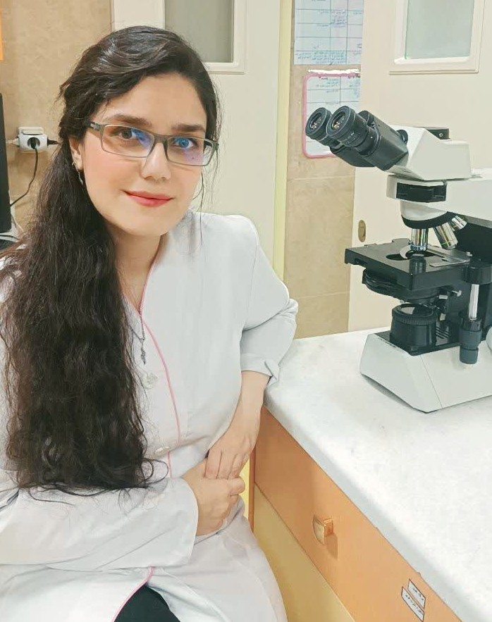

Molecular microbiologist with experience in biotechnology, molecular diagnostics, and microbial research. My work combines experimental approaches and molecular analysis to investigate biological systems and biomedical challenges.
📧 valiallahialaleh@gmail.com

My research interests lie at the interface of molecular microbiology, biotechnology, and biomedical sciences, including pathogen detection, microbial adaptation, molecular diagnostics, and biological systems.
Molecular Microbiology Biotechnology Molecular Diagnostics Microbial Research Biomedical SciencesCurrent Medicinal Chemistry · 2024
Research in Molecular Medicine · 2022
Chulalongkorn Medical Journal · 2022
GPA: 16.97 / 20 (≈3.7/4)
Thesis evaluation: Excellent
GPA: 16.43 / 20 (≈3.6/4)